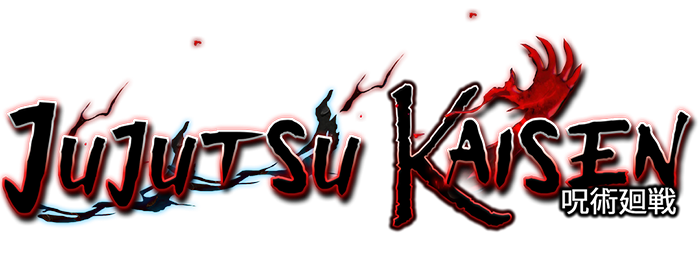
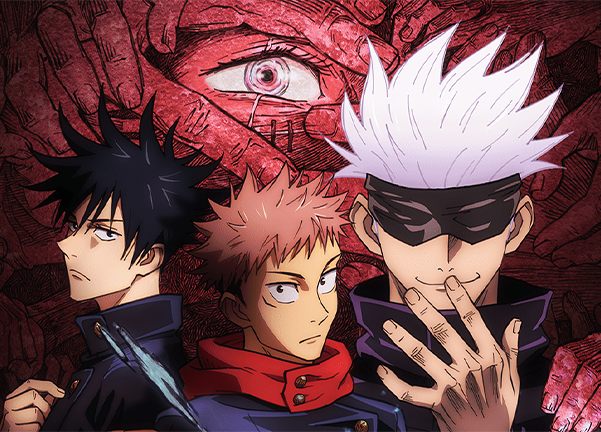

Jujutsu Kaisen é uma série sobrenatural de horror que acompanha a vida de Yuji Itadori, um adolescente que se envolve em uma batalha épica entre exorcistas e poderosasmaldições e acaba sendo possuído"
X